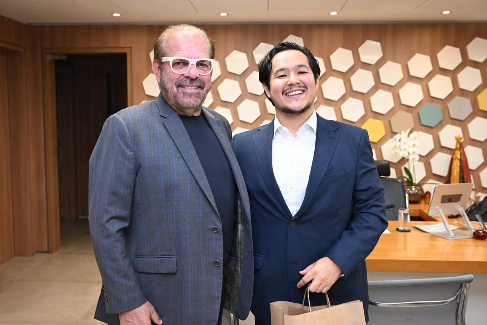
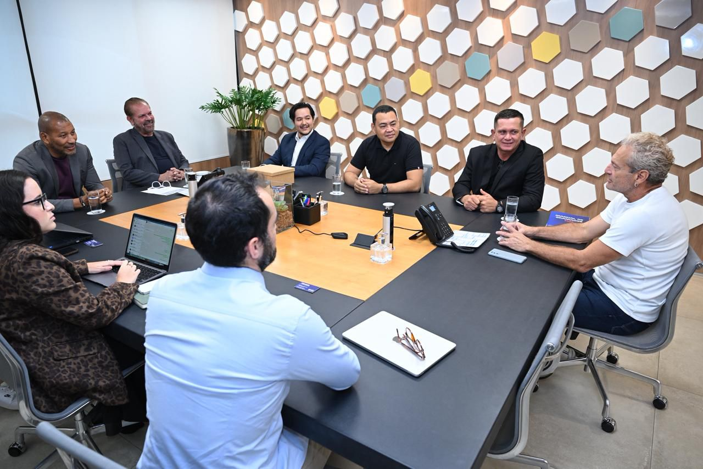

A Associação Esportiva Araçatuba esteve nesta quarta-feira (2) na sede da Federação Paulista de Futebol (FPF), em São Paulo, para uma reunião institucional com a direção da entidade. O encontro marcou a apresentação do novo presidente da AEA, Guilherme Nishikawa, e possibilitou uma conversa sobre o atual momento do clube, o processo de reorganização e os projetos que estão sendo estruturados para os próximos anos.
Guilherme esteve acompanhado do membro do Conselho Fiscal da AEA, Leandro Reis, do secretário de Esportes de Araçatuba, Mauro Yamanoi, e do membro da Secretaria Municipal de Esportes, Vlademir Poerscke.
A comitiva foi recebida pelo presidente da Federação Paulista de Futebol, Reinaldo Carneiro Bastos, pelo vice-presidente Mauro Silva, pela diretora do Departamento de Registros e Licenciamento, Fernanda Chamusca, e pelos diretores Thiago Girardi e Fábio Moraes.

FPF acompanha situação da AEA
Durante a reunião, além da apresentação formal do novo presidente, a Federação buscou entender como a Associação Esportiva Araçatuba se encontra após o período vivido pelo clube na última temporada.
Guilherme apresentou o cenário atual da AEA, falou sobre o processo de reorganização e explicou alguns dos caminhos que estão sendo adotados pela nova gestão para estruturar o clube e criar condições para um projeto de longo prazo.
O presidente também adiantou alguns projetos que estão em processo de viabilização, envolvendo diferentes áreas da Associação, e apresentou à Federação uma visão sobre os próximos passos planejados para o clube.
Reinaldo Carneiro Bastos demonstrou-se solícito durante o encontro e colocou a Federação Paulista de Futebol à disposição para auxiliar a AEA dentro das possibilidades da entidade. O diálogo também permitiu estreitar a relação institucional entre a nova gestão do clube e a FPF.

Reunião positiva para a nova gestão
Para Guilherme Nishikawa, o encontro foi importante para apresentar pessoalmente o trabalho que vem sendo desenvolvido e estabelecer um canal direto de diálogo com a Federação.
O presidente da AEA deixou a sede da FPF satisfeito com a reunião e com os encaminhamentos discutidos. Para a nova gestão, o encontro representa mais um passo no processo de reorganização do clube e dá ainda mais impulso para a continuidade dos projetos que estão sendo construídos.
A Associação Esportiva Araçatuba segue trabalhando na estruturação de suas áreas e na construção de um planejamento que permita ao clube avançar de forma responsável, com diálogo institucional, organização e transparência.
A nova gestão reforça que o trabalho de reconstrução da AEA é um processo contínuo e que os próximos passos estão sendo construídos com planejamento e responsabilidade.
Sobre a Associação Esportiva Araçatuba
Fundada em 15 de dezembro de 1972, a Associação Esportiva Araçatuba é um dos principais símbolos esportivos da cidade. Conhecida como Canário, construiu sua história no futebol paulista a partir de uma forte relação com Araçatuba e sua torcida, e inicia um novo período de organização institucional e planejamento para os próximos anos.
Imprensa
Assessoria de Comunicação — Associação Esportiva Araçatuba
aearacatuba@aearacatuba.com.br
www.aearacatuba.com.br